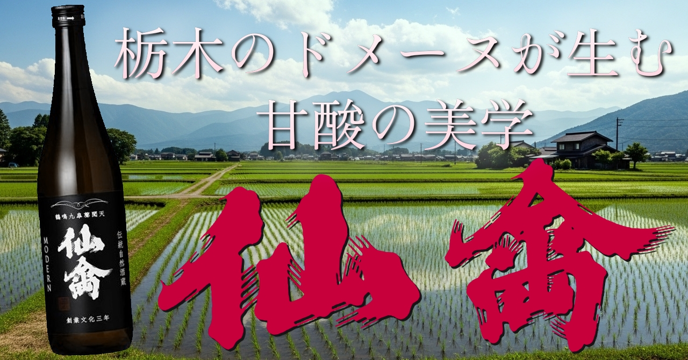
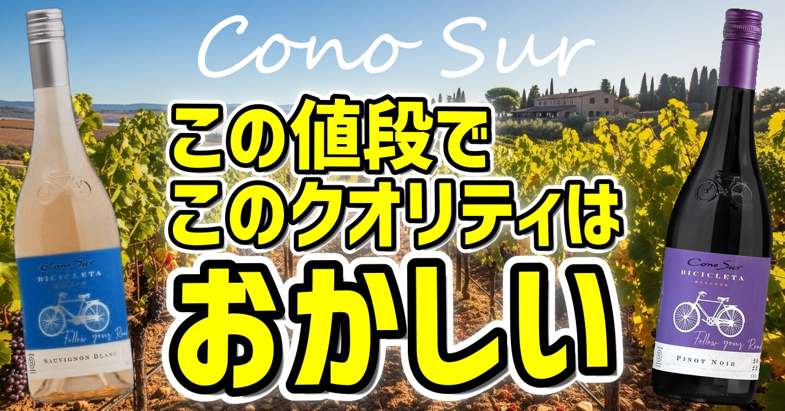
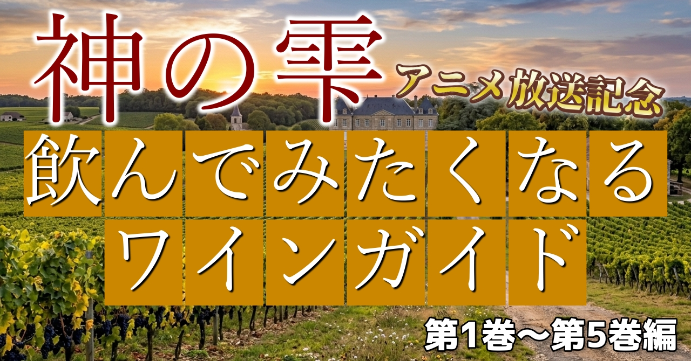
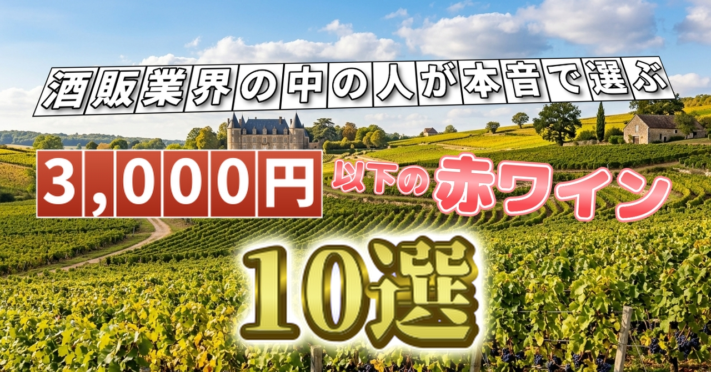

Articles

🍷 Wine — Editor's Pick
Louis Jadot
ブルゴーニュを語るなら
まず、この名前から
1859年創業、フランス・ブルゴーニュの名門ネゴシアン兼ドメーヌ、ルイ・ジャド。テロワールの個性を最大限に引き出す哲学のもと醸される赤・白ワインを厳選してご紹介します。

🍶 日本酒 — Editor's Pick
栃木のドメーヌが生む
甘酸の美学
仙禽
栃木県さくら市・株式会社せんきんが醸す仙禽。仕込み水と同じ水脈の田んぼで米を育てるドメーヌ化の哲学と、甘酸っぱくジューシーな味わいで日本酒界に唯一無二の存在感を放つ各シリーズをご紹介します。

🥃 Whisky — Editor's Pick
KILCHOMAN
アイラの農場から生まれた
煙と塩の物語
2005年、アイラ島最西端に生まれた農場蒸留所キルホーマン。大麦の栽培から瓶詰めまでを島内で完結させる哲学と、重厚なピートスモークが宿る個性的なラインナップをご紹介します。

🍸 Gin — Editor's Pick
季の美
「日本に生まれて良かった。」
そう思える一杯
京都蒸溜所が手がけるジャパニーズクラフトジン「季の美」。米スピリッツと11種の京都産ボタニカルが織りなす洗練されたラインナップを、クロフク編集長が厳選紹介します。

🍷 Wine — Editor's Pick
Cono Sur
この値段でこのクオリティはおかしい
チリ・コルチャグア・ヴァレー発、自転車ラベルでおなじみのコノスル。1993年創業以来、チリで初めて高品質なピノ・ノワールを世界に輸出したワイナリーが手頃に楽しめる5本をご紹介します。

🍶 Japanese Sake — Editor's Pick
美しさと旨さが同居する山口の秘宝
東洋美人
山口県萩市の澄川酒造場が醸す「東洋美人」。初代が亡き妻を偲んでつけた名を持つこの蔵は、2013年の豪雨被害から見事に復活。醇道一途シリーズをはじめ、純米大吟醸・辛口など個性豊かな720ml商品を厳選してご紹介します。

🥃 Whisky — Editor's Pick
ピート好きは絶対ハマる！
アイラの最強ブレンドウイスキー
BIG PEAT
ダグラスレイン社が誇るアイラ・ブレンデッドモルト『BIG PEAT』。薬品のような独特の香りが魅力。Ardbeg、Caol Ila、Bowmore、Port Ellen...アイラの全てが詰まった究極の一本。5つのバリエーションから自分好みの一本を見つけてください。

🍷 Wine — Special
【神の雫 アニメ放送記念】
飲んでみたくなるワインガイド
漫画『神の雫』の第1巻～第5巻に登場する12本のワインを厳選紹介。神咲雫と一緒にワインの世界への扉を開く、当時の物語を追体験できるワインガイドです。

🍺 Beer — Editor's Pick
スコットランドのパンクブルワリー
BREWDOGの世界へようこそ！
「常識に逆らう」をキーワードに、個性的でパンクなビールを生み出し続けるスコットランドのクラフトビール「BrewDog」。PUNK IPAから究極の1本BORN TO DIEまで、ブリュードッグの魅力を13本厳選してご紹介します。

🍷 Wine — Editor's Pick
酒販業界の中の人が本音で選ぶ、
3,000円以下の赤ワイン10選
「ワイン選びは冒険だ」という想いから、フランス・イタリア・アメリカ・チリ・日本の5つの産地から、それぞれの個性を持つ赤ワイン10本を厳選しました。世界の多様な味わいを3,000円以下で体験できます。

🍶 Sake — Editor's Pick
酒販業界の中の人が本音で選ぶ、
3,000円以下の日本酒10選
「日本酒を飲んでみたいけど、どれを選べばいいかわからない」そんな方へ。東北・北陸・関東東海を横断し、酒販の現場で働くクロフク編集長が本音で厳選した、コスパ最強の10本をご紹介します。

🥃 Whisky — Editor's Pick
酒販業界の中の人が本音で選ぶ、
3,000円以下のウイスキー10選
「ウイスキーを飲んでみたいけど、どれを選べばいいかわからない」そんな方へ。スコッチ・アイリッシュ・ジャパニーズを横断し、酒販の現場で働くクロフク編集長が本音で厳選した、コスパ最強の10本をご紹介します。
ウイスキー、ワイン、日本酒を中心に、ありとあらゆるお酒を年間数百本試飲してきた酒販業界の現場の人間。実際に飲んで確かめた本音の評価をお届けします。